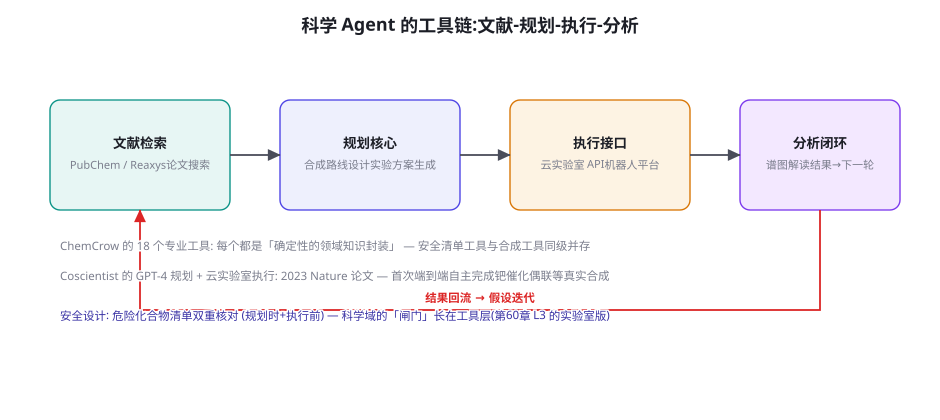
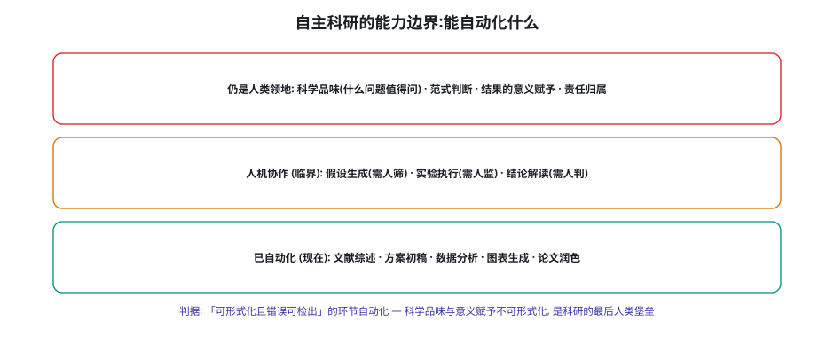

科学发现 Agent：Coscientist、ChemCrow 与 AI Scientist
Agent 的工具调用能力遇到「人类知识金字塔最顶端的领域」——科学发现。本章讲三个里程碑系统：ChemCrow 的专业工具链、Coscientist 的云实验室闭环（Nature 2023）、AI Scientist 的端到端论文生产——以及自主科研的能力边界金字塔：什么已经能自动化、什么必须人机协作、什么仍是人类领地。
ChemCrow：专业工具链的范式

ChemCrow（Bran et al. 2023, arXiv:2304.05332）的工程贡献是把「工具调用 Agent」带进了专业科学域，它的三条设计原则可迁移到任何专业域：① 工具是「确定性知识的封装」——18 个工具覆盖合成路线预测、安全性检查、谱图分析、采购查询——每个工具背后是专业软件或数据库（RDKit、PubChem）——「LLM 出主意、工具管事实」的分工（与第 44 章「模型管语义、协议管格式」同构——专业域的可靠性来自把「专业知识」固化在工具层而非指望模型记住）；② 安全工具是「一等公民」——安全清单核查与合成工具平级并存，规划与执行双重核对（GPT-4 时代的前置示范——第 60 章「闸门」在化学域的第一次亮相）——ChemCrow 论文专门论证了「无安全工具的裸 LLM 会给出危险合成建议」（对照实验的价值：证明了工具层安全是必需品不是装饰）；③ 「能力互补」的评估方法——ChemCrow 与裸 GPT-4 的对照评估（专业化学家的盲评：ChemCrow 在合成任务上显著更优、但「通用化学知识问答」上不如裸模型）——「工具增强的系统赢在任务、裸模型赢在闲聊」——专业域 Agent 的竞争力公式第一次被实证。
Coscientist：云实验室的端到端闭环
Coscientist（Boiko et al. 2023, Nature）把闭环推到了「真实湿实验」：GPT-4 规划 + 多源文献检索 + 云实验室 API（RoboChem 类自动化平台）执行——自主完成了钯催化偶联与 Suzuki 反应等真实有机合成。它的三个工程亮点与启示：① 「规划-搜索-执行-分析」的迭代循环（图 71-1 的四段）——每轮实验结果回流修正假设——第 22 章 reflection 循环的科学域版本，且「验证器」是物理世界本身（实验成功与否由仪器数据裁决——真实世界的 ORM 是最硬的）；② 文献到操作的「语义桥梁」——从论文里提取实验方案并翻译成实验室 API 指令（「读文献 → 写 protocol → 调 API」的三段翻译——信息抽取 + 代码生成的组合，第 8 章 + 第 51 章能力的会师）；③ 人的监督位置在「方案审批」——每个实验方案在执行前过人类确认（安全与成本的闸门，第 60 章 L2 级）——「自主性」的边界划在「提出」与「执行」之间——这个划法值得所有「高代价执行域」（金融、医疗、工业）借鉴。Coscientist 的 meta 启示：当「执行环境」能 API 化（云实验室之于化学），Agent 的能力边界就是「你把什么变成了 API」——「API 化你的领域」是科学域与所有专业域的第一性工程。
| 环节 | 自动化程度 | 验证方式 | 人的角色 | 失败代价 |
|---|---|---|---|---|
| 文献综述 | 高（全自动） | 引用可追溯（第 63 章核对） | 抽查盲区 | 低（误导但可纠） |
| 假设生成 | 中（生成后筛选） | 无法自动验证（只能事后） | 筛选与优先级判断 | 中（浪费一轮实验） |
| 方案设计 | 中高（AI 起草） | 安全核查工具 + 同行逻辑 | 方案审批（闸门） | 中高（实验成本） |
| 实验执行 | 高（机器人/云实验室） | 仪器数据实时裁决 | 现场监督 | 高（样品与设备） |
| 结论解读 | 低（辅助分析） | 统计检验（可形式化部分） | 意义赋予与责任 | 极高（错误结论的传播） |
「微工具链」的封装骨架给出代码级参照（本页实验的地基——任何专业域的确定性封装模式）：
class FinanceToolkit:
"""ChemCrow 模式的金融域封装: 确定性知识进工具层。"""
def valuation_dcf(self, cashflows: list[float], r: float) -> dict:
"""DCF 估值 — 数值计算交给代码, 不靠模型心算。"""
pv = sum(cf / (1 + r) ** (i + 1) for i, cf in enumerate(cashflows))
return {"npv": round(pv, 2), "rate": r, "n": len(cashflows)}
def compliance_check(self, action: str, context: dict) -> dict:
"""合规核查 — 规则库的形式化 (ChemCrow 安全工具的对位)。"""
rules = load_rulebook("fin-compliance-v3") # 版本化管理
hits = [r for r in rules if r.matches(action, context)]
return {"pass": not hits, "violations": [r.describe() for r in hits]}
def historical_lookup(self, symbol: str, date: str) -> dict:
"""行情检索 — 参数零记忆原则 (第63章数据幻觉的解法)。"""
return market_db.query(symbol, date) # 真数据源, 不信模型记忆
def strategy_backtest(self, signal_fn_code: str) -> dict:
"""回测沙箱 — 生成的策略代码先在历史数据上跑 (第70章干跑)。"""
fn = safe_exec(signal_fn_code, allowlist=[pandas, numpy])
return backtest_engine.run(fn, window="2018-2025")
# 工具描述 (第17章规范) 的金融域示例:
# valuation_dcf: 用现金流折现计算估值。参数: cashflows 为
# 逐年现金流列表(单位与货币需与 context 一致), r 为折现率。
# 何时不该用: 现金流为负且无转正路径时不适用(改用情景法)。骨架与第 17 章工具协议的衔接点在「描述规范」：「何时不该用」写进描述（克制维度，第 54 章）与「单位与参照系」的显式声明（金融域的单位错误是事故级——第 66 章空间语义的专业版）。「参数零记忆」原则在代码注释里出现——historical_lookup 的存在本身就是「不让模型背行情」的架构表达。把这段骨架按你的领域替换函数体，一小时得到你自己的 ChemCrow 起点版。
AI Scientist：端到端的极限测试

AI Scientist（Lu et al. 2024, Sakana AI, arXiv:2408.06292）把端到端推到极限：自主选题、实验、写作、评审的全流程论文生成（单篇成本约 $15）。它的价值不在「论文质量」（产出明显低于人类研究——方法新颖性弱、结论平凡），而在作为「全流程自动化」的系统测试暴露的问题清单：① 选题质量是瓶颈（生成的选题多为「已有工作的组合微调」——「科学品味」（什么问题值得问）的缺失恰是金字塔顶层的注脚）；② 自我评审的可靠性不足（Agent 评审自己论文的分数与人类评审相关性弱——第 57 章 Judge「自我偏好」与「能力边界」的双重印证）；③ 幻觉在长链路中累积（文献引用、实验数据、结论推理的幻觉沿流水线放大——第 63 章「Agent 执行链路幻觉治理」的实证案例）。AI Scientist 的正确读法：它不是「自动科学家已实现」，而是「全流程自动化的压力测试报告」——每一个暴露的问题都是一份「人类介入点」的设计说明书——这份清单比任何「能做什么」的展示都更有工程价值。
金字塔顶层（科学品味/范式判断）难自动化的根源不是「能力不够」而是「目标函数缺失」：文献综述有明确标准（覆盖、准确）、实验执行有明确成败（数据出来没）、但「什么问题值得问」没有可优化的标量——它的判断依赖「当前范式的语境」（库恩意义上的范式）、领域的审美传统、乃至「人类社会此刻关心什么」——这些是「元层级」的判断，本身没有数据可以监督学习。三个渐进的「半自动化」出路（都不解决但都能缓解）：① 从「预测论文的影响力」学起——「哪些研究最终重要了」的历史数据可以训练「重要性代理」（MineDojo 对齐式奖励的科研版——用后见之明当监督信号）；② 群体化的品味聚合——多 Agent 提案 + 多视角评审的聚合（第 28 章多 Agent 的科研应用——品味不可单模型化但可群体化近似）；③ 人类的品味作为「课程信号」——研究者对 AI 提案的采纳/拒绝记录是最高质量的品味数据（第 47 章「用户修改稿」的科研版——飞轮在科学域的燃料）。三条出路共同指向一个诚实结论：科学品味可以被「辅助」与「放大」，但它的「最终裁决权」在可见的未来仍是人类的——这既是限制，也是科研人文价值的护城河。
为你自己的领域搭一个「ChemCrow 式微工具链」（一天）：挑你领域的 5 个「确定性知识封装」——比如金融域的「估值计算器、合规检查器、历史行情检索」、法律域的「法条检索、案例相似度、合同条款审查」、生物域的「序列比对、引物设计检查」——用 Python 封装成工具（多数领域有现成的专业库），接上 LLM 循环，让 Agent 完成 3 个真实任务（对照：不用工具的裸 LLM 完成同样任务）。然后做 ChemCrow 式的盲评（你自己当化学家：哪个输出更专业、哪些裸模型反而更流畅）。这个实验会让你亲手确认「工具增强赢在任务、裸模型赢在闲聊」——并收获一份「你领域的专业工具清单」——它是科学域方法论向任何专业域迁移的第一块砖。
「假设生成的人机协作界面」（五环节矩阵的第二行）值得单独设计，因为它是「AI 产量 × 人类品味」的交汇点，界面设计决定协作质量。三个设计要素：① 假设的「结构化提案单」——每个 AI 假设带四字段（假设陈述 / 依据文献 / 可检验预测 / 预估成本）——结构化让「筛选」从读散文变成核表（品味判断的注意力花在真问题上）；② 筛选动作的「二元 + 理由」——采纳/拒绝 + 一句话理由（理由是品味数据的采集点——第 47 章「用户修改稿」的科研版：拒绝理由是「科学品味」最高质量的监督信号）；③ 「批量化提案」的节奏——AI 一次产 5~10 个假设、人每批 15 分钟筛一次（批处理节奏保护深度思考——逐个推送的「打断式协作」是品味判断的杀手）。三个要素合成的协作形态：「AI 是高产但没品味的合著者，人是低产但守门的主编」——这个分工的效率来源是「让 AI 承担量、让人承担判断密度」——科研产出的瓶颈从「想 idea」移到「筛 idea」，恰恰是科研产能的结构性升级（被解放的筛选时间可以投入更深的验证与演绎）。
「AI Scientist 问题清单」逐条展开成「人类介入点设计」（压力测试报告的正确用法），给三个最关键问题的介入点设计模板：① 选题环节的介入点：『意义声明』前置——AI 提案必须附「这个研究如果成功，谁会用它、改变什么决策」（意义声明字段——强制把「值得问吗」显式化——人类评审只需判断声明的真实性而非凭空评估意义——把开放判断变成有锚判断）；② 自评环节的介入点：评审的「异源化 + 抽样校准」——AI 自评的分数只做「初筛排序」不做「质量裁决」，裁决权在「异源评审」（另一个模型家族或人类——第 57 章委员会架构的科研版）+ 每月抽样人类复评校准；③ 长链路幻觉的介入点：关键断言的「检查点核对」——流水线在四个点强制核对（选题的文献依据、方案的参数来源、结果的统计有效性、结论与数据的对齐——每点跑第 63 章核对流水线）——「流水线的质量不取决于最弱的模型，取决于最少的检查点」——AI Scientist 暴露的三个问题 × 三个介入点，可以合成一张「人机协作科研的作业指导书」——压力测试的正确消费方式就是把它变成 SOP。
「文献综述的自动化」作为科学 Agent 的「第一入口场景」值得给一个分层方案——它是 Coscientist 四段里的第一段，也是多数研究者最先受益的环节（第 73 章 Deep Research 的预告）：① 检索层的结构化——不用「一问一答」式的文献问答，而是「研究问题的分解 → 分面检索 → 结果合并」的管线（问题「X 对 Y 的影响」分解为机制面/方法面/争议面三路检索——检索的结构化让覆盖度可审计——第 8 章 RAG 的科研特化）；② 抽取层的表格化——「从 50 篇论文抽取：方法/样本/结论/局限」的四列结构化抽取（信息抽取的经典任务——LLM 的强项区，且可抽样人工核验——第 50 章抽检纪律）；③ 综合层的「矛盾优先」——综述的组织原则不是「时间线」而是「分歧图谱」（「对同一问题，阵营 A 说 X 的证据是……、阵营 B 说反例是……」——矛盾优先让综述有「观点密度」而非「字数密度」——AI 综述最容易犯的错是「平滑掉所有争议」——「保留分歧」是科研综述区别于营销文案的核心纪律）；④ 引用层的零容忍——每条引用可点开（第 63 章），且「引用支持度」标注（这条引用支持的是主张的哪一部分——「引用-主张」对齐核对）。四层方案叠加，文献综述的自动化部分能达到「人类助理」的水准——而研究者的时间被释放给「分歧的裁决」——那才是综述里真正需要科学品味的部分。
一个针对「数据敏感型实验室」的补充（合成生物学、药物化学、芯片工艺等「数据即机密」的领域）：本章的云实验室路线有一个变体——「本地闭环」架构（Coscientist 的公有云实验室对数据敏感域不适用——配方外发即泄密）。本地闭环的三件套：① 本地模型部署（开源 VLA/LLM 的私有化——第 48 章蒸馏与小型化是前置——本地算力跑得动的前提是模型够小）；② 本地知识库——文献与内部实验数据的私有检索（第 13 章 RAG 的私有化部署，外网检索关闭或经脱敏代理）；③ 本地执行接口——设备 API 的内网封装（网关层做「出站白名单」——第 61 章出站过滤保证「方案与数据不出域」）。本地闭环的代价是能力折损（小模型的推理弱于旗舰、无外网检索的文献覆盖收窄）——「机密性与能力」的权衡在这条线上无免费午餐——务实的混合形态是「外脑做通用知识、内脑做机密数据」的双脑架构（脱敏后的抽象问题发外脑、具体数据留内脑——第 61 章脱敏管线的推理架构版）——数据敏感域的 Agent 架构设计，本质上是一场「信息流图谱」的设计（哪类信息允许流到哪层）——这是安全篇（58-65 章）方法论的又一次跨域复用。
三个高频疑问
Q：科学 Agent 的「幻觉」比普通场景更危险吗？如何治理？更危险且形态特殊——「幻觉的科学三型」（第 63 章四型的科学域特化）：① 引用幻觉——编造不存在的文献/数据点（AI Scientist 的实证重灾区）——治理：第 63 章引用核对流水线 + DOI/数据库的硬核验（科学引用是最可验证的引用——「每条引用可点开」应是科学 Agent 的出厂标准）；② 数据幻觉——「我记得这个化合物的性质是……」（记忆里的参数错误或过时）——治理：参数类主张强制走工具查询（ChemCrow 原则：参数不靠记忆靠工具——「数值零记忆」纪律）；③ 推理幻觉的科学版——「看起来合理的伪机理」（自洽但错误的机制解释——科学叙事的流畅性掩盖逻辑漏洞）——治理：机理主张强制「可检验化」（「这个机理预测什么实验结果？」——把叙事翻译成可判真假的预测——第 46 章「可验证性」的科学哲学回归）。三型治理的共同釜底抽薪：科学域恰好拥有「最硬的验证器」（实验数据）——把验证器前置（方案预检、in-silico 预演）比事后纠错便宜——「先算后做」是科学域幻觉治理的总纲。
Q：实验室自动化（机器人平台）与 Agent 的集成，工程上从哪起步？按「自动化程度阶梯」四步走：① 数字化清单——盘点现有设备的「可编程性」（哪些仪器有 API/脚本接口、哪些只有手动操作——多数实验室的「API 化率」低于 30%——这是第一块短板）；② 半自动协议——「AI 生成 protocol 文档 + 人执行」的协作模式（零硬件投入起步——Coscientist 的「方案审批」在没有机器人的实验室同样成立——协议质量的提升立刻兑现）；③ 单设备 API 化——挑一台高频使用的仪器接 API（液体工作站/酶标仪——单点突破验证「AI→仪器」链路的工程可行性）；④ 平台级集成——云实验室/机器人平台的全流程闭环（Coscientist 形态——投资大但边际价值随任务数复利）。四步的关键认识：「API 化」本身就是科学基建投资（不论 Agent 与否都值得做——可编程的实验室同时是可复现的实验室）——Agent 只是给这笔投资加了一个「智能调用层」——用这个叙事拿预算比「为了 AI 改造实验室」容易十倍。
Q：AI Scientist 类「自动写论文」对科研诚信体系意味着什么？这是治理问题（第 65 章框架的科学域延伸），三个层面：① 声明义务——AI 参与的透明披露已是主流期刊的明确要求（Nature/Science/ACM 均已出台政策：AI 不能署名、使用必须声明——「有限风险级」的透明义务在科研域的具体化）；② 责任归属——论文的错误由人类作者负责（署名即担责——AI 是工具不是作者——第 65 章责任框架的清晰案例）；③ 系统性风险——「自动生成的低质量论文灌水」对同行评审体系的污染（AI Scientist 生成成本 $15/篇——规模化灌水的经济可行性是真实的威胁——出版界的「注入攻击」）。科研机构与个人的务实应对：机构建「AI 使用声明模板 + 产出抽查机制」，个人守「AI 辅助、人类担保」的底线（每个结论你能为它辩护吗？）——科研诚信的工程化与第 64 章 Spec 思路同构：把诚信原则变成可检查的条款。
本章在全书网络中的连接：上游是第 17 章（工具协议——ChemCrow 的 18 工具是其专业域实例）、第 60 章（闸门——实验审批）、第 63 章（幻觉治理——科学三型）；横向与第 70 章（仿真域——「验证器」从物理实验到虚拟实验的连续谱）、第 47 章（飞轮——采纳数据作为品味信号）并列；下游通向第 73 章（Deep Research——文献综述自动化的旗舰形态）、第 91-98 章（理论篇——科学发现作为「搜索与假设检验」的形式化）。复习锚点：四段工具链图（71-1）、三设计原则、五环节矩阵表（71-1 表）、边界金字塔图（71-2）、AI Scientist 问题清单、科学三型幻觉、实验室四步阶梯。
「科研域的验证器前置」再补一个可操作的分层——「先算后做」总纲的具体化。按「验证成本从低到高」的四级预检：① 逻辑自检（免费）——方案的内部一致性（试剂用量与反应式对得上吗、统计功效够吗——LLM 自检 + 规则检查即可）；② 数据库预检（便宜）——「这个实验做过吗」的文献检索（重复实验的避免——第 51 章「内部基准」的科学版：你所在实验室的「已做实验库」）；③ in-silico 预演（中等）——计算模拟先跑（分子对接、工艺仿真、统计模拟——仿真域（第 70 章）的科学域应用——「干跑环境」的实验室版）；④ 小试预检（较贵）——缩小规模的先导实验（全量实验前的 1/10 规模验证）。四级预检的「闸门逻辑」与第 60 章操作分级完全同构：便宜的错误在便宜级拦住（逻辑错不该活到湿实验），每级只放行「本级拦不住的」——Coscientist 的「方案审批」实质是这四级之上的人类终审——科研安全与效率的最优组合就是「预检栈 + 人类终审」——这套栈在化学域已验证，向任何「实验成本高」的领域（材料、药物、芯片工艺）平移的阻力极小。
补一个跨域视角：本章的「专业工具链」模式在法律与医疗域的对应物与差异点。法律域（Harvey 类系统）——工具链：法条检索、案例相似度、条款审查——与 ChemCrow 同构度高（确定性知识封装的可行性同样成立）；差异点：法律文本的「解释弹性」让「确定性封装」的边界更难划（哪条规则是确定性的？判例的权重怎么算？——「知识封装的粒度」是法律域的第一工程难题）。医疗域（诊断辅助类）——工具链：指南匹配、药物相互作用检查、影像辅助——安全闸门的最严档（FDA/NMPA 的器械监管让「工具」本身需要认证——「AI 作为医疗器械」的合规路径是工程前置）；差异点：医疗域的「闸门」有法定形态（临床决策支持系统的人机责任规范）——第 65 章治理框架的「高风险级」义务直接适用。三域对比的启示：ChemCrow 模式是「专业域 Agent」的通用骨架，但「知识封装的可行性、闸门的法定形态、监管的介入深度」是域变量——跨域迁移时换的是这三个变量，不是骨架——这张「骨架 × 域变量」的二维表，是从化学出发通向所有专业域的迁移地图。
「科研 Agent 的评测」有一个区别于其他域的原则值得立此存照：「过程正确性」比「结果正确性」更可评测、也更重要。科研任务的「结果」往往要等很久才知道对错（实验验证周期、领域接受周期），等结果就是「不可评测」；但科研过程的「规范性」是即期可测的——引用可核验、方法有出处、数据可复现、结论与数据对齐、局限被诚实声明——第 56 章评测体系在科研域的指标设计因此应以「过程合规分」为主（像审稿人审「方法部分」那样审 Agent 的每一步）、「结果正确分」为辅（只能事后回看）。这个原则的深层含义：科研 Agent 的可信度不是「它发现了真理」，而是「它每一步都可核查」——当过程全部可核，结果即使错了也能被快速定位与修正——可核查性是科研场景里「正确性」的工程替身——这个替身思想对一切「结果延迟可见」的领域（战略、教育、政策）都有迁移价值。
本章小结
- ChemCrow 三原则：工具即确定性知识封装、安全工具一等公民、能力互补评估（工具增强赢在任务）。
- Coscientist：四段迭代闭环 + 文献到 API 的三段翻译 + 闸门划在「提出与执行」之间——「API 化你的领域」是第一性工程。
- AI Scientist 是压力测试报告：选题品味瓶颈、自评不可靠、长链路幻觉累积——每个问题是人类介入点说明书。
- 科学品味难自动化的根源是目标函数缺失——三条半自动化出路（影响力代理/群体聚合/采纳信号飞轮）。
- 科学三型幻觉（引用/数据/推理）的总纲：验证器前置，「先算后做」。
- 实验室集成四步：数字化清单 → 半自动协议 → 单设备 API → 平台闭环——API 化本身是科研基建。
自测题
- 跑「微工具链」实验：你领域的 5 个确定性封装是什么？盲评的结果支持「工具增强赢在任务」吗？
- 给你领域的「科学三型幻觉」各写一条治理条款：引用、参数、机理分别怎么核？
- 你的实验室/团队的「API 化率」是多少？四步阶梯你现在在第几步？下一步的最小投入是什么？
- 「AI 辅助、人类担保」的底线在你的科研流程里怎么落地？写三句可检查的条款。
参考文献与延伸阅读
- Bran, A. M. et al. (2023). ChemCrow: Augmenting large-language models with chemistry tools. arXiv:2304.05332
- Boiko, D. A. et al. (2023). Autonomous chemical research with large language models (Coscientist). Nature 624
- Lu, C. et al. (2024). The AI Scientist: Towards Fully Automated Open-Ended Scientific Discovery. arXiv:2408.06292
- Ai4Science / Microsoft Research (2023). Large Language Models for Scientific Discovery. arXiv:2311.07361
- Darvish, A. et al. (2024). A Review of LLM-based Autonomous Agents in Chemistry. arXiv:2406.06241
- 工程参照：chemcrow/chemcrow · SakanaAI/AI-Scientist（本章两大系统的开源实现）